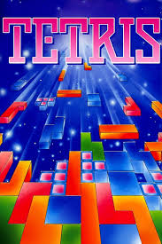

In Tetris, players complete lines by moving differently shaped pieces (tetrominoes), which descend onto the playing field.The completed lines disappear and grant the player points, and the player can proceed to fill the vacated spaces. The game ends when the uncleared lines reach the top of the playing field. The longer the player can delay this outcome, the higher their score will be. In multiplayer games, players must last longer than their opponents; in certain versions, players can inflict penalties on opponents by completing a significant number of lines. Some versions add variations on the rules, such as three-dimensional displays or a system for reserving pieces. I tried out remaking this game fro personal reasons, because it brought back some nostalgia from the old days.
 a simple intro video on tetrismy other projects are found here:Tsedexashu08@github.com
Try it out for your self